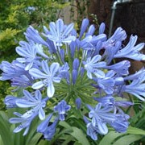
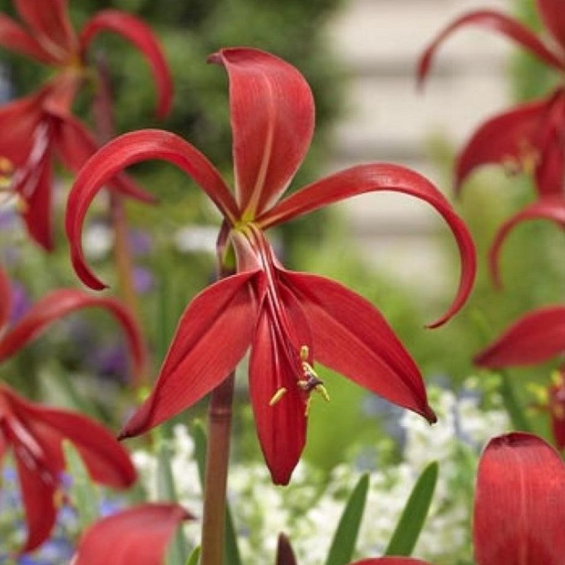
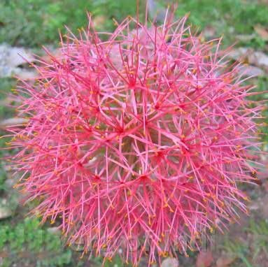
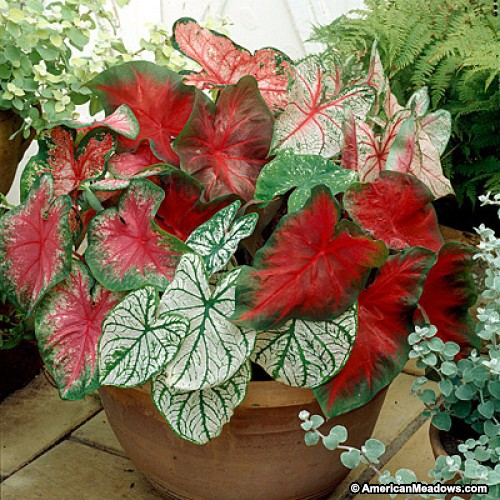
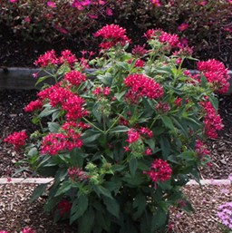
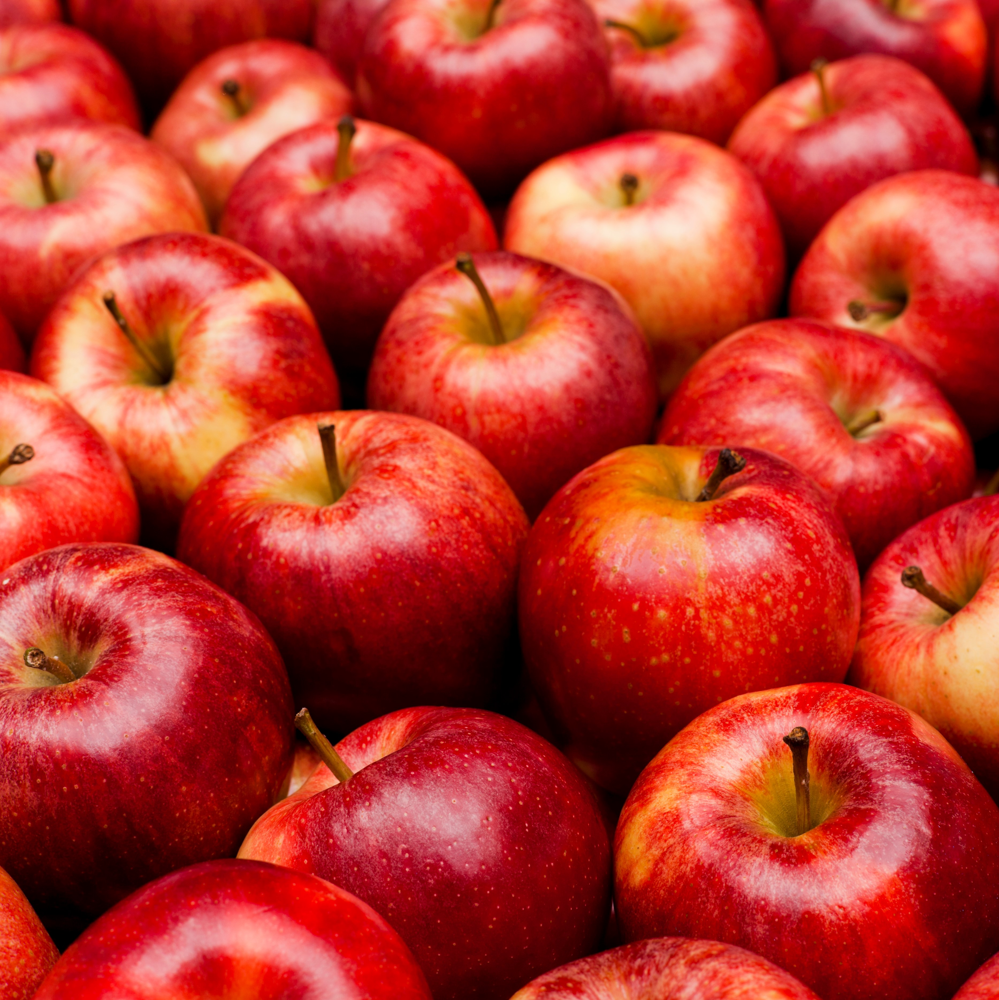
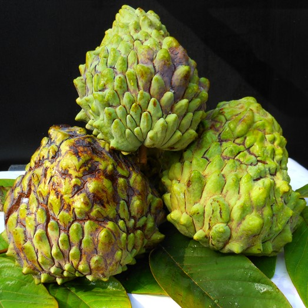
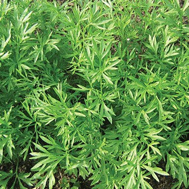
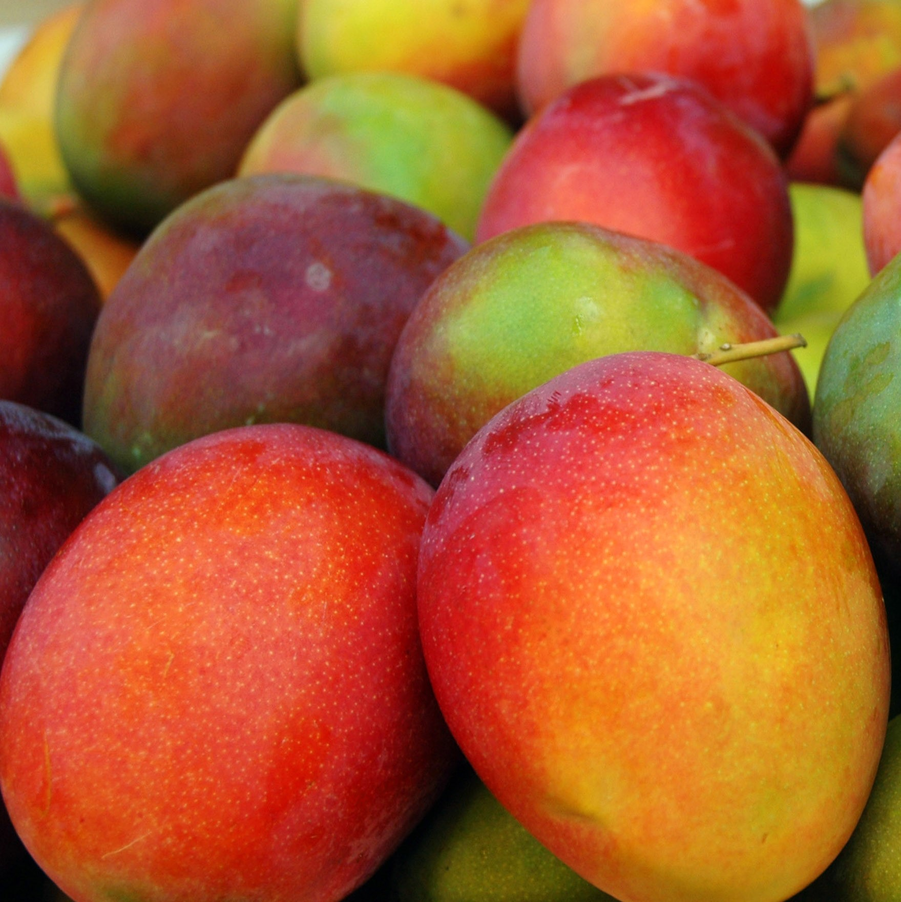
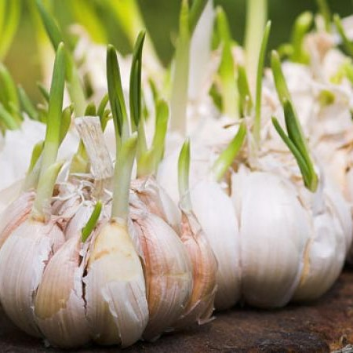

AgriData
Common Flora in Florida

- Category: Perennials
- Flower Color: Lavender-Blue
- Water Requirements: Maintain the soil well watered
- Height: 18 in. to 5 ft.
- Hardiness: USDA Zones 7-10
- Sun Exposure: Sun to partial shade
- Bloom Time: Mid-Summer through October
- Soil Requirements: Rich, well drained and full of organic materials.

- Category: Bulbs
- Flower Color: Bold Red or Bright Green
- Water Requirements: Water regurlarly, do not overwater.
- Height: 6-12 in.
- Hardiness: USDA Zones 9 and 10
- Sun Exposure: Full sunlight
- Bloom Time: Late Spring to Early/Late Summer
- Soil Requirements: Moist with compost enriched soil.

- Category: Bulbs
- Flower Color: Reddish-Orange
- Water Requirements: Water gradually
- Height: approx. 10 in.
- Hardiness: USDA Zones 9-12
- Sun Exposure: Full sun to partial shade
- Bloom Time: Late Spring to Early Summer
- Soil Requirements: Rich, well drained soil.

- Category: Bulbs
- Flower Color: Comes in a variety of color, most well known is Green-Purple/Pink.
- Water Requirements: Water occasionally.
- Height: 12-30 in.
- Hardiness: USDA Zones 9 and 10
- Sun Exposure: Partial shade with sunlight.
- Bloom Time: Spring
- Soil Requirements: Well drained rich soil.

- Category: Shrub
- Flower Color: Pink, Lavender or Red-White
- Water Requirements: Occasionally
- Height: 16-36 in.
- Hardiness: USDA Zones 10 and 11
- Sun Exposure: Semi full sunlight
- Bloom Time: Late Spring to Late Summer
- Soil Requirements: Well drained soil(not too soggy).
Common Edible Plants

- To produce fruit, these varieties need about 300 to 400 hours below 45 degrees during the winter, so they’ll do well in central or north Florida.
- Apple trees do best when planted in fertile, well-drained soil, between late December and February.
- The fruit on these varieties tends to ripen in June or July.
- Apple tree can last up from six to ten years.

- Grows best in South Florida.
- Ripe in late Summer to early Fall.
- Sand, marl, and muck are well drained soil types as well as the sands and limestone based soild of South Florida.
- Unknown Lifespan.

- Full sun to part shade amd rich, well-drained soil.
- Grow in fall and winter.
- Harvest in the winter and spring.

- In general, mango trees should be planted in full sun.
- Harvested from May through August.
- Can be planted anytime of the year.
- Best planted along the Southeast and Southwest coasts.

- Late Fall through early Winter.
- Put the bulbs in a well-ventilated spot with bright, indirect light for a few days.
- Plants well in any type of soil.
- Typical harvest time is Spring.